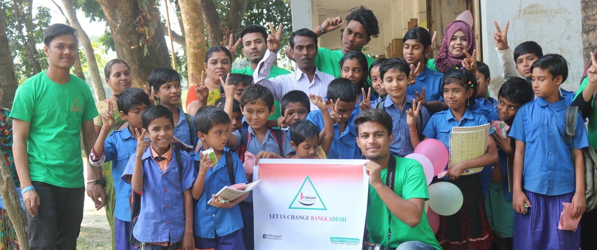
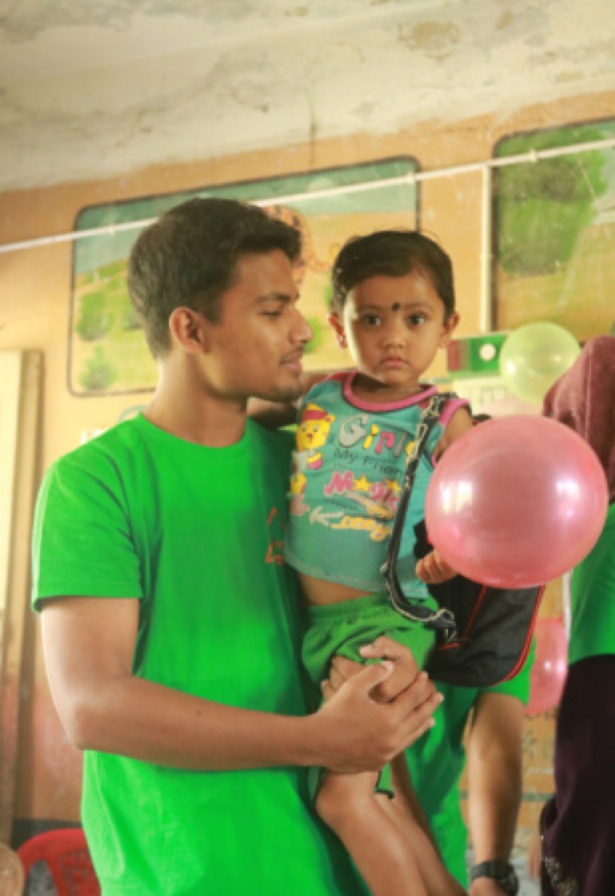

Work That Isn’t Research
The research answers questions. This answers a different one — what happens to a child in a salinity-flooded village in Satkhira who has no school to walk to. I founded the Dinghy Foundation in 2020 to work on exactly that, and it remains the part of my week that has the most immediate effect on anyone.

Sundarbans Learning Hubs & Scholarships
Community-managed learning centres in villages with no accessible school, plus educational kits, uniforms and books for children whose families cannot afford them.
15 hubs running · 1,250+ children enrolled · 94% stay through primary completion.Clean Water & Hygiene Literacy
Teaches children and mothers water purification, menstrual hygiene and disease prevention — critical in salinity-affected zones where safe drinking water is scarce.
35 workshops · 8,500+ mothers and young people trained.Coastal Climate Preparedness & Youth Action
Trains young volunteers in emergency disaster response, tree planting and community safety before and during cyclone season.
250 youth volunteers trained across 12 villages.Satkhira sits where the Bay of Bengal is steadily winning. Salt water has pushed into the groundwater and the fields, so families lose their drinking water and their income in the same season. When that happens the first thing to go is a child’s schooling — usually a girl’s — and once a child stops attending, they rarely come back.
So the work is deliberately unglamorous and local. Put a learning hub inside the village rather than expecting an eight-year-old to travel to one. Hand the family a uniform and a set of books so school costs nothing they cannot spare. Teach mothers how to make water safe, because a child who is repeatedly ill cannot attend anyway. Train the teenagers in cyclone response, because they are the ones who will be there when it comes.
The number that matters most is not how many children enrolled — it is that 94% of them stay and finish primary school. Enrolment is easy to buy. Retention is the thing that changes what a life looks like twenty years on, and it is the figure we hold ourselves to.
This is also the same instinct that runs through the research: the point of a diagnostic model is a patient who gets treated earlier, and the point of a learning hub is a child who can still read at sixteen. Both are about getting a useful thing to the people who have the least access to it.

Australian Red Cross Lifeblood
Active Blood & Plasma Donor · Adelaide, SARegular voluntary donor supporting emergency medical supplies and transfusion medicine across South Australia.
My Body Is My Body Program
Global Ambassador · USAInternational educational outreach promoting child-safety curricula and abuse-prevention frameworks.
Global Peace Chain
Country Ambassador, Bangladesh · USA (Remote)Represented Bangladesh in global peace-building forums and cross-cultural youth summits.
Asia World Model United Nations
Youth Delegate · BangladeshParticipated in international Model UN committees debating global health policy, digital rights, and sustainable development goals.